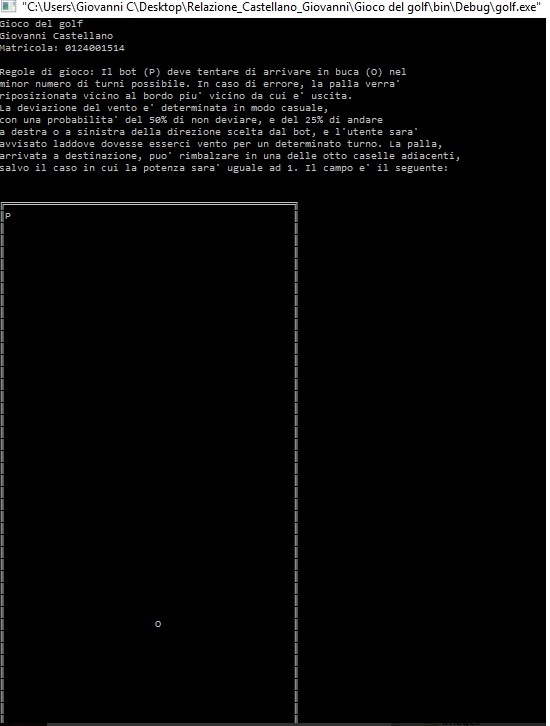

Screenshot
Il programma alla prima esecuzione si presenta così

Il caso standard senza deviazioni non mostra messaggi aggiuntivi
Nel caso vi siano deviazioni per vento o rimbalzo, l'utente verrà avvisato
In caso di vittoria, verrà stampato il seguente messaggio
In caso di sconfitta, verrà stampato il seguente messaggio
A fine partita, verranno mostrati i punteggi di tutte e 10 le gare